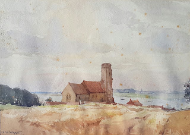
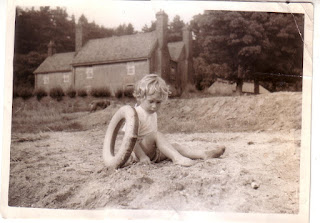
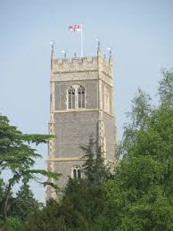
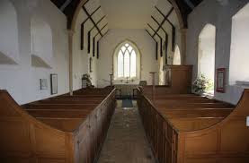
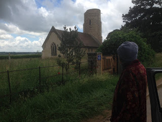

"The curfew tolls the knell of passing day
The lowing herd wind slowly o'er the lea,
The ploughman homeward plods his weary way,
And leaves the world to darkness and to me."
Elegy Written in a Country Churchyard by Thomas Gray (1716-1771)
 |
| Ramsholt Church by Jack Merriott (1901-1968) |
{kind=link}
The round tower has buttresses that make it appear oval. I
wonder whether they were added because even the original builders realised that the mix
of flint rubble and septaria they were gumming together was not the most
durable material? Ramsholt church's Norman tower was already being repaired in 1300 when they bought coralline crag from the Aldeburgh area to strengthen it and to shore up the nave roof. This church is not awe-inspiring
and eternal; it’s a vulnerable structure, surviving only
because it has been cared for. It's human-scale.
 |
| On the beach in front of the Ramsholt Arms c 1956 |
{kind=link}
"For them no more the blazing hearth shall burn,
Or busy housewife ply her evening care:
No children run to lisp their sire's return,
Or climb his knees the envied kiss to share."
 |
| St Mary's Church, Woodbridge |
{kind=link}
The church itself had come close to dereliction in the mid c19th, the thatched roof had collapsed, the nave was open to the sky; the walls were green with damp. But that was before my time. By the mid c 20th, when I was a child, the church had been saved, re-furbished, re-roofed. I think it was very much as it is today, though without the deliberate wild-flower cultivation. We children used to explore the graves, shiver at the carved skulls, look for families buried together or for the tiny plots of infants. I didn't then see the interior of the church as beautiful although the box pews may have piqued our interest. I remember it as plain and possibly ... dull? My father loved it but I couldn't see why. We were used to the splendour of fifteenth-century perpendicular St Mary’s Church, Woodbridge. I was christened in St Mary’s – it was hats, best suits and polished shoes; banners, incense and processions -- and a nice line in urbanity. When some doting relative exclaimed at the sweetness of my baby fingers the then Rector commented that they’d look very much better when I was older and they were curled around a gin-and-tonic.
When my mother moved back to Woodbridge, many years into widowhood, she tried re-joining the St Mary's congregation but it wasn't long before the sensory overload of colour and carvings, music, manners and
quasi-Mass became too much for her tired mind to process and, after the third successive occasion
when she’d fainted during the service and been wheeled out with the greatest kindness, I decided we should look for somewhere smaller scale. Religion is important to Mum -- the more so as her dementia has progressed.
The elders from St Mary’s ran fortnightly services in her extra-care
accommodation and this was a lifeline. They were (and are) a tiny, friendly, genuinely
devout group – but communion in a sitting room, even with hymns, was not the same as worship in a “proper” church.
"For who to dumb Forgetfulness a prey,
This pleasing anxious being e're resigned,
Left the warm precincts of the cheerful day,
Nor cast one longing, lingering look behind?"
In 2014 Ramsholt Church tower was yet again At Risk . A local artist donated a large water colour to be auctioned for the restoration fund and my nephew, George, escorting Mum to lunch at their favourite pub, the Ramsholt Arms, dug deep into his father’s cheque book to buy it for her. We were invited to a "Heritage Day" and I discovered the church ran regular bi-monthly services, even though there was no one attending from the immediate parish any more. Ramsholt Church uses the Book of Common Prayer and the words she mostly knew; their hymns were traditional and sung wholeheartedly; the regular congregation was small and welcoming without making any social demands that she couldn’t meet. We felt safe as we fastened ourselves into our box pew and listened delightedly to the wheezing of the pug dog accompanying its mistress a few pews ahead.
 |
| The box pews in Ramsholt Church |
{kind=link}
"For thee who mindful of the unhonoured dead,
Dost in these lines their artless tale relate:
If chance by lowly Contemplation led,
Some kindred spirit shall inquire thy fate."
 |
| Probably Mum's last long look at Ramsholt Church |
{kind=link}
There was a service at Ramsholt the day before she left
Suffolk (as far as I know) for ever. I whispered our farewells to others in the
congregation but I didn’t tell Mum. I couldn’t bear to. She’d said to the vicar
so often “the next time I’ll be here you’ll be taking my funeral”. Now it seems likely to be true.
We're not giving up of course. Her new parish church of St John and St Giles, Great Easton, looks rather like a mother hen and its congregation rallied to take her under their wing.
An outing to nearby Thaxted Church left her breathless, literally. She was transfixed. Her lips went blue, her limbs froze. We weren't even at a service but the space, the light, the atmosphere -- wherever she looked there was the invisible rustle of past believers. “Imagine what it was like for those people when they were singing their first hymn here,” she said suddenly. I stopped wondering whether I should call the paramedics and thought how glorious it was that she could feel this way and how glad I was that there are still places able to evoke such a visionary response.
"One morn I missed him at the customed hill,
Along the heath and near his favourite tree;
Another came: not yet beside the rill,
Nor up the lawn nor at the wood was he."
We're not giving up of course. Her new parish church of St John and St Giles, Great Easton, looks rather like a mother hen and its congregation rallied to take her under their wing.
An outing to nearby Thaxted Church left her breathless, literally. She was transfixed. Her lips went blue, her limbs froze. We weren't even at a service but the space, the light, the atmosphere -- wherever she looked there was the invisible rustle of past believers. “Imagine what it was like for those people when they were singing their first hymn here,” she said suddenly. I stopped wondering whether I should call the paramedics and thought how glorious it was that she could feel this way and how glad I was that there are still places able to evoke such a visionary response.
{kind=link}
{kind=link}
"Even from the tomb the voice of Nature cries,
Even in our ashes live their wonted fires."